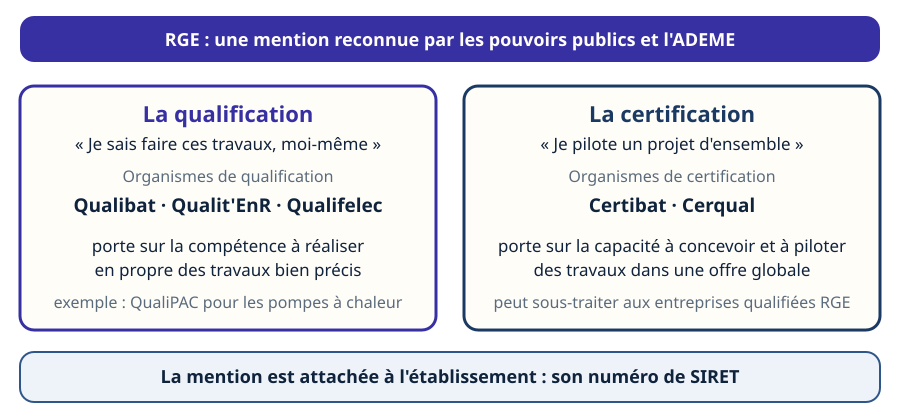
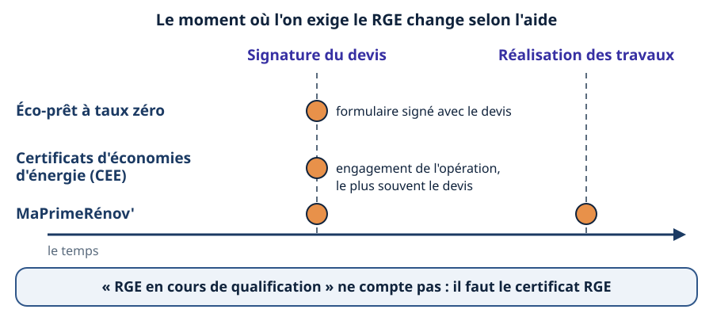
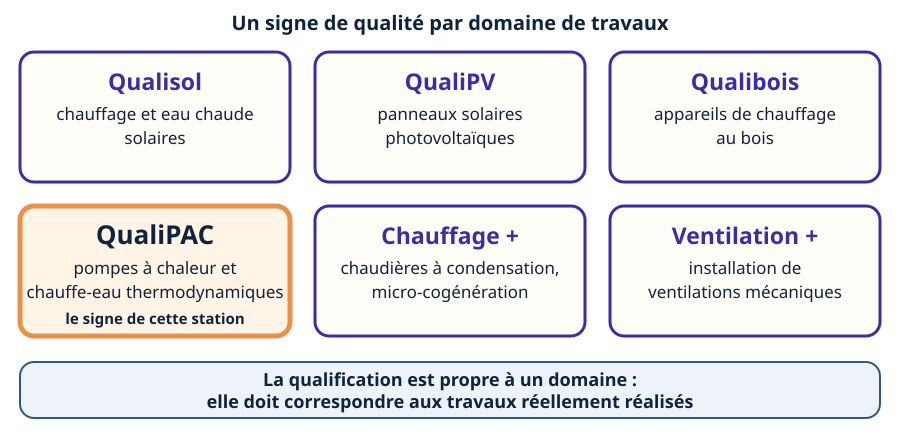
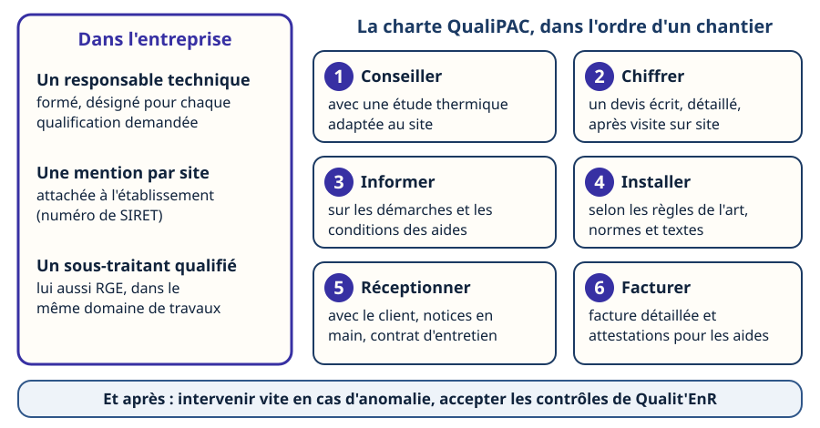
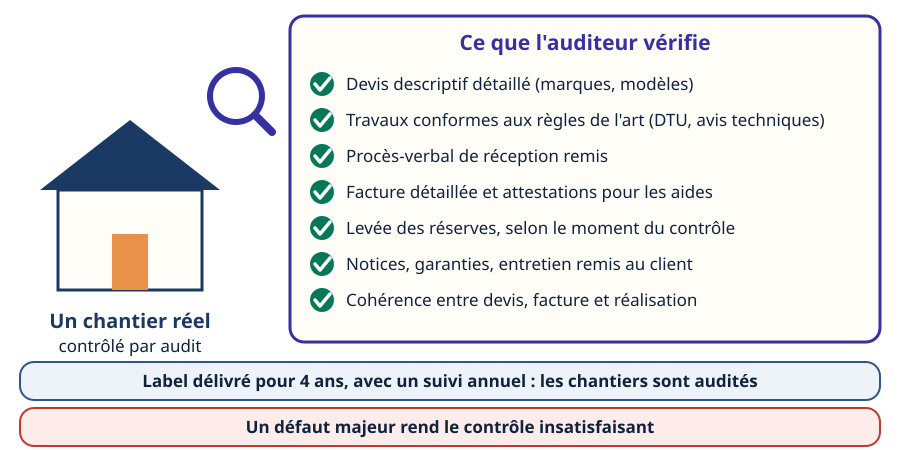
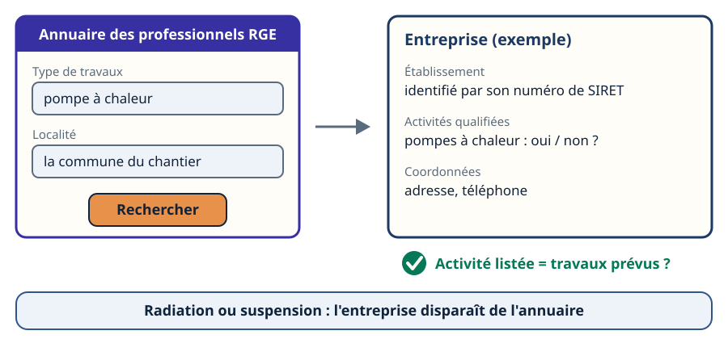
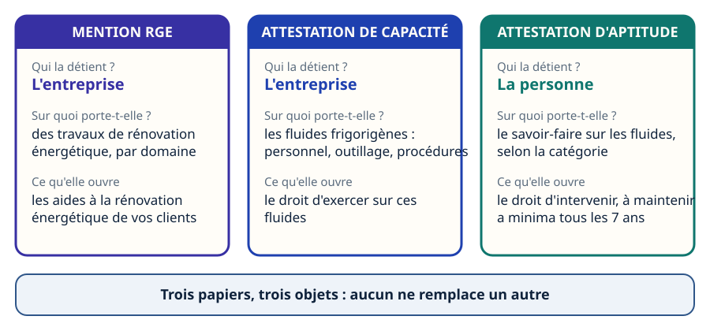

Certifications & normes · niveau BTS
RGE & QualiPAC — les qualifications
Mini-station commentée · 8 écrans et 4 questions · environ 10 minutes

À la fin de la station, vous savez expliquer pourquoi le client n'a l'aide que si l'entreprise est RGE pour ces travaux, dire qui délivre la mention et quand on la vérifie, situer QualiPAC parmi les autres signes de qualité, énumérer ce que l'entreprise doit tenir, vérifier un professionnel dans l'annuaire officiel — et ne pas confondre le RGE avec l'attestation de capacité ou d'aptitude fluides.
Référentiel : TP TECVC, REAC TP-00133 — hors REAC : culture professionnelle du technicien et du chargé d'affaires. Aucune des compétences CP1 à CP10 ne porte sur la qualification des entreprises. Pont avec l'attestation d'aptitude 2025 : code 1.00 (législation applicable).
Chaque écran peut être expliqué à voix haute : le bouton « Écouter » commente ce que vous voyez. Rien n'est dit qui ne soit aussi écrit.
Écran 1 sur 8
L'écoconditionnalité : l'aide s'ouvre avec l'entreprise
Les aides à la rénovation énergétique ne dépendent pas seulement des travaux : elles dépendent aussi de l'entreprise qui les réalise. C'est ce que l'on appelle l'écoconditionnalité. Le texte du service public est sans détour : « Vos travaux et prestations doivent être réalisés par un professionnel reconnu garant de l'environnement (RGE). » (service-public.gouv.fr, fiche « MaPrimeRénov' (MPR) », vérifiée le 1er septembre 2026, parcours par geste).
Le ministère de la Transition écologique le dit de la même façon : le label RGE est la condition pour bénéficier des aides comme MaPrimeRénov', l'éco-prêt à taux zéro ou les certificats d'économies d'énergie (CEE). Une exception à connaître : pour MaPrimeRénov', le choix d'un professionnel RGE n'est pas exigé pour un raccordement à un réseau de chaleur ou de froid.
Aucun montant dans cette station : ils sont fixés par arrêté et changent. Ce qui compte pour vous, technicien d'études, c'est la condition : sans RGE pour ces travaux, pas d'aide pour votre client.

Écran 2 sur 8
Le RGE : une mention, plusieurs organismes
RGE veut dire reconnu garant de l'environnement. C'est une reconnaissance accordée par les pouvoirs publics et l'ADEME à des professionnels du bâtiment engagés dans une démarche de qualité (France Rénov'). Elle repose sur l'analyse de l'entreprise au regard d'un référentiel d'exigences de moyens et de compétences.
Cette analyse et la délivrance du signe de qualité sont assurés par des organismes de qualification (Qualibat, Qualit'EnR, Qualifelec) ou de certification (Certibat, Cerqual). Deux choses différentes :
- la qualification porte sur la compétence de l'entreprise à réaliser en propre des travaux bien précis ;
- la certification porte sur la capacité à concevoir et piloter des travaux dans une offre globale ; l'entreprise certifiée peut sous-traiter à des entreprises qualifiées RGE.
La mention est attachée à l'établissement (numéro de SIRET) : une entreprise qui veut être référencée pour plusieurs sites doit demander une qualification pour chacun. Les textes cités par le ministère : décret n° 2014-812 du 16 juillet 2014 et arrêté du 1er décembre 2015 modifié.

Écran 3 sur 8
Quand faut-il être RGE ?
Être RGE un jour ne suffit pas : ce qui compte, c'est de l'être au bon moment, et ce moment change selon l'aide (fiche « La mention RGE : questions/réponses », ADEME, mars 2025) :
- éco-prêt à taux zéro : à la date de signature du formulaire correspondant au devis ;
- CEE : à la date d'engagement de l'opération d'économies d'énergie, le plus souvent la date de signature du devis ;
- MaPrimeRénov' : à la date de signature du devis et à la date de réalisation des travaux.
Et la notion de « RGE en cours de qualification » ? Elle ne peut pas être utilisée : pour que le client bénéficie des aides, l'entreprise doit avoir obtenu son certificat de qualification ou de certification portant le logo RGE. Pour une jeune entreprise sans référence de chantier, les organismes peuvent proposer une qualification probatoire, limitée à deux ans, le temps d'apporter la preuve de chantiers réalisés en propre.

Écran 4 sur 8
QualiPAC et les autres signes de qualité
Il n'existe pas un RGE, mais un signe de qualité par domaine de travaux. L'association Qualit'EnR, créée en 2006 pour développer la qualité d'installation en énergies renouvelables, en publie plusieurs : Qualisol, QualiPV, Qualibois, Chauffage +, Ventilation + — et QualiPAC, pour l'installation de pompes à chaleur (aérothermiques, géothermiques) et de chauffe-eau thermodynamiques. QualiPAC est un signe de qualité titulaire de la mention RGE, géré par Qualit'EnR.
D'autres organismes délivrent aussi des mentions RGE (Qualibat, Qualifelec) : l'annuaire officiel liste les activités de chaque établissement, quel que soit l'organisme.
Ce qu'il faut retenir : la qualification est propre à un domaine. Une entreprise qualifiée pour le bois n'est pas RGE pour une pompe à chaleur : le signe doit correspondre aux travaux réellement réalisés.

Écran 5 sur 8
Ce que l'entreprise doit tenir
- Un responsable technique formé. L'entreprise en nomme un par qualification demandée. Pour les énergies renouvelables, il doit suivre des formations et réussir des tests de connaissances ; pour l'efficacité énergétique, la preuve peut aussi venir d'un diplôme ou d'un titre. Il n'a pas l'obligation de participer à chaque chantier.
- Un sous-traitant, lui aussi qualifié. L'entreprise doit assurer tout ou partie de la fourniture et de la pose ; si elle sous-traite, elle choisit une entreprise également RGE dans le même domaine de travaux.
- La charte de son signe. Les installateurs QualiPAC s'engagent sur les 10 points de la charte : compétences et garanties légales, conseil avec étude thermique, devis descriptif après visite, information sur les aides, installation dans les règles de l'art, réception en présence du client, facture détaillée et attestations, intervention rapide en cas d'anomalie, contrôles de Qualit'EnR acceptés.

Écran 6 sur 8
L'audit de chantier : le RGE se contrôle
Le label RGE est délivré pour une période de 4 ans, avec un suivi annuel. Une fois qualifiées, les entreprises voient leurs chantiers contrôlés dans le cadre d'audits de réalisation : la conformité des travaux aux règles de l'art est examinée sur un chantier réel. Depuis la réforme entrée en vigueur au 1er janvier 2021, les contrôles sont renforcés pour certaines catégories dites critiques, dont les pompes à chaleur pour le chauffage ou pour l'eau chaude sanitaire.
L'auditeur vérifie notamment : le devis descriptif détaillé, la réalisation selon les règles de l'art (DTU, avis techniques), le procès-verbal de réception, la facture détaillée et les attestations servant à obtenir les aides, la levée des réserves selon le moment du contrôle, la remise des notices et garanties, et la cohérence entre devis, facture et réalisation. Un défaut majeur rend le contrôle insatisfaisant.

Écran 7 sur 8
Vérifier un professionnel : l'annuaire officiel
- Ouvrir l'annuaire officiel des professionnels RGE sur france-renov.gouv.fr (page « annuaire-rge »).
- Chercher par type de travaux et par localité.
- Retrouver l'établissement : la mention est attachée à son numéro de SIRET.
- Vérifier que l'activité listée est bien celle des travaux prévus. Une qualification pour un autre domaine ne couvre pas le chantier.
L'annuaire est alimenté par les organismes de qualification et de certification, dont la majorité envoient leurs données chaque jour. Si un organisme radie une entreprise, il cesse d'envoyer ses données : elle disparaît de l'annuaire. Un doute, une fraude ? Le site propose un formulaire de signalement à l'organisme compétent. Et un réflexe de bon sens rappelé par France Rénov' : les administrations ne démarchent pas pour les travaux.

Écran 8 sur 8
Bilan : RGE, capacité, aptitude — ne pas confondre
- L'aide s'ouvre avec l'entreprise : il faut le RGE pour les travaux concernés.
- Le moment de la vérification change selon l'aide ; « en cours de qualification » ne compte pas.
- QualiPAC est le signe des pompes à chaleur et des chauffe-eau thermodynamiques : un domaine parmi d'autres.
- Le label dure 4 ans avec suivi annuel ; les chantiers sont audités.
- Il se vérifie dans l'annuaire officiel, établissement par établissement.
- Le RGE n'est ni l'attestation de capacité ni l'attestation d'aptitude : il ouvre les aides, pas le droit de manipuler un fluide. Dès que l'on intervient sur le circuit frigorifique d'une pompe à chaleur, les deux attestations de la station Aptitude & capacité restent nécessaires.
Le réflexe : ouvrir l'annuaire avant de conseiller une entreprise à un client.

Question 1 sur 4
Devis signé avec une entreprise « RGE en cours de qualification » : et l'aide ?
Question 2 sur 4
Qualifiée pour le bois, elle propose de poser une pompe à chaleur : RGE ?
Question 3 sur 4
Que contrôle l'auditeur lors d'un audit de chantier ?
Question 4 sur 4
Avant de signer, quel réflexe pour vérifier l'installateur ?
Les correspondances de la station
- Les CEE (sous-ligne Thermique) — l'aide dont l'engagement de l'opération exige, elle aussi, une entreprise RGE.
- Aptitude & capacité (sous-ligne Fluidique & thermique) — l'autre paire de papiers : ils ouvrent le droit de manipuler un fluide, pas les aides.
- Les garanties (même sous-ligne) — la charte QualiPAC engage l'installateur sur ses garanties légales.
- Le DPE (sous-ligne Thermique) — le diagnostic et l'audit énergétique qui précèdent les travaux aidés.